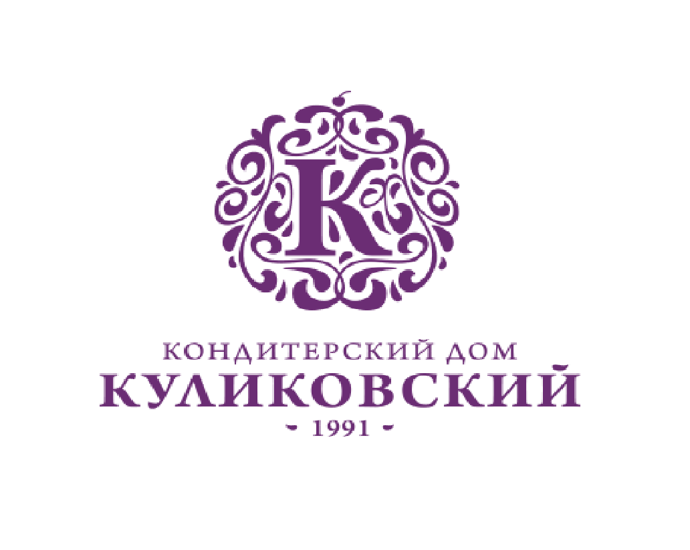

в 1991 году
В 1991 году Олег Борисович Куликов испек торт "Птичье молоко", с которого начались история большой и дружной фиолетовой семьи и бренда "Куликовский". В самом начале производство Куликовских тортов было семейным делом, которое имело в своем активе лишь небольшую кухню в типовой квартире в городе Бишкек.
Постепенно нарабатывались клиенты, росла популярность. Вместе с ней рос ассортимент предлагаемых десертов и место, где все это производилось. Так за 10 лет дело выросло в небольшую семейную кондитерскую со своим цехом, салоном заказов и преданными клиентами.

В миллениум мы вошли уже известной на весь город и область компанией. Популярность продолжала расти и пространства для выпуска продукции требовалось уже больше. В 2004 году мы приняли решение о переезде на новую территорию, которой предстояло стать уже настоящей производственной площадкой.
С тех пор мы выросли более чем в 5 раз. Территория нашей фабрики выросла до 4000 кв.м. Цехов стало уже 4, к тому же появилась собственная площадка по производству молочной продукции. Помимо фабрики на сегодня у нас уже более 100 собственных фирменных магазинов в трех странах (Кыргызстан, Казахстан и Россия). А общее количество сотрудников составляет более 1500 человек.
За годы нашего существования вместе с нами выросло очень много людей. И мы счастливы делить с нашими клиентами самые важные и теплые события нашей жизни. Например, наши Дни рождения! С 2016 года мы провели уже несколько семейных фестивалей на свой День рождения в двух странах.
И мы продолжаем расти и развиваться!